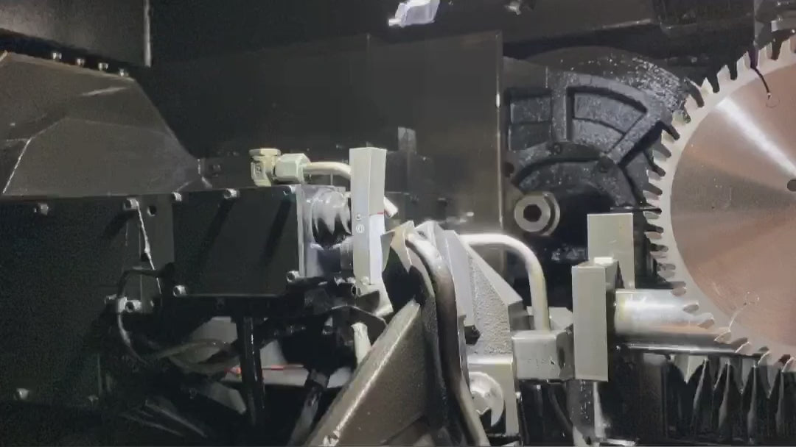
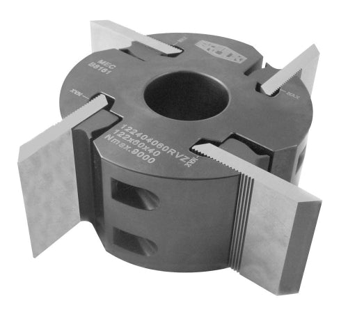
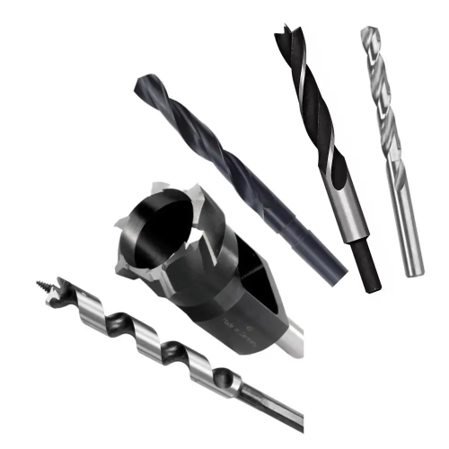
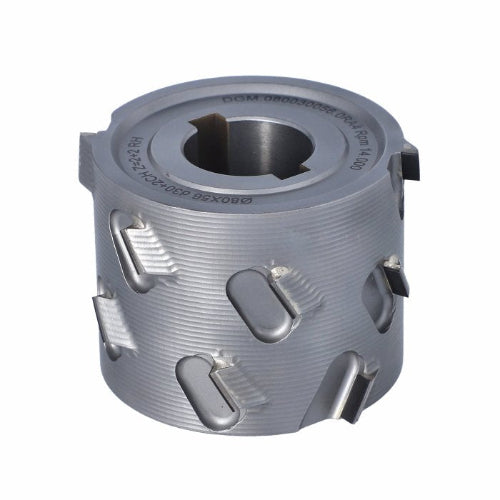

Eigener Abhol- & Bringservice
Kein Verpacken und kein Paketversand.
Ruhrgebiet · Münsterland · Niederrhein

Vom Betrieb in unsere Schleiferei und wieder zurück.
Wir holen die Werkzeuge direkt bei Ihrem Betrieb ab.
Bearbeitung in unserer eigenen Schleiferei.
Digitale Informationen zum aktuellen Status.
Fertige Werkzeuge werden wieder zu Ihrem Betrieb geliefert.
Klare Abläufe statt Verpacken, Versenden und Hinterhertelefonieren.
Kein Verpacken und kein Paketversand.
Regelmäßige Abholung für Stammkunden.
In der Regel 2–3 Arbeitstage bei uns im Betrieb.
Wenn es dringend ist, prüfen wir kurzfristige Möglichkeiten.
Informationen zu Abholung, Bearbeitung und Rücklieferung.
Direkte Ansprechpartner statt Hotline.

Hier zeigen wir erst dann Kundenstimmen oder Bewertungen, wenn sie geprüft und zur Veröffentlichung freigegeben sind.
Werkzeuge für die Holz- und Kunststoffbearbeitung.
 HW-Sägeblätter
HW-Sägeblätter VHM-Fräser
VHM-Fräser
Profilwerkzeuge
Bohrer & Senker Hobelmesser
Hobelmesser
Weitere PräzisionswerkzeugeEigener Abhol- und Bringservice für Tischlereien, Schreinereien und holzverarbeitende Betriebe.
Die Grafik zeigt unsere Serviceregionen vereinfacht. Ob Ihr Standort auf einer Tour liegt, klären wir persönlich.
Prüfen, ob wir bei Ihnen abholen
Gudel Werkzeuge verbindet eigene Fertigung mit direkter Betreuung. Wenn Sie eine Frage zu Ihrem Werkzeug oder zur Abholung haben, sprechen Sie mit uns.
Einige Werkzeuge zum Testen mitgeben und unseren Service kennenlernen.
Direkt erreichbar unter 02369 20990-0